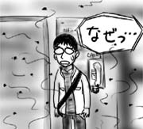

再三、同期の話で申し訳ないのですが、今日は彼のアパート探しを手伝っていました。
とは言え、昨日、駐在員のマネージャと一緒にアパート探しをして、すでに良さそうな物件の目処を見つけて来たそうで、今日僕がしたことと言えば、彼の中で昨日のアパートに決めるという意思を強固にすることだけでした。以下はその過程です。
- 1件目。高すぎて没。
- 2件目。会社から遠すぎて没。
- 3件目。無愛想なおばさん管理人にほぼ無口で案内される。ランドリーが汚すぎて没。
- 4件目。アパートの管理オフィスに行こうとしたら、なぜかエレベータホールに大量の蠅が。

帰り道、同期が俯きながら洩らした「俺、やっぱり昨日のところにするよ…」という台詞が印象的でした。
新キャラ同期も僕と同じく、アメリカへ渡る前は生え抜きのペーパードライバでした。というわけで、今日は晩飯を一緒に食べた後、会社の駐車場で駐車の練習を手伝っていました。
助手席に座って「ハンドルちょっと切るの遅いかも」とか「もっとゆっくりブレーキ踏んだ方がいいよ」とか言ってる僕。１年半前を振り返るに、ずいぶんと偉くなったものだな、と思いました。
勘違いだというのは重々承知していますよ。
今日から同期が新たな駐在員としてやってきました。別部署で別ビルではあるのですが、ともあれ新キャラ登場です。同期と言っても入社研修以来なので、ほぼ5年ぶりです。
顔合わせをかねて、同じく別ビルにいる駐在員のマネージャと晩ご飯に出かけてきました。
同期の彼は映画をこよなく愛する文科系の香りのする男。行きの車の中で駐在員のマネージャが「スポーツする？テニスとか？」と聞いたところ、速攻で「いえ、特には」と答える彼。
アメリカの食事の量が多いことに関して、彼が現在滞在中のホテルにはフィットネス部屋がついているので「そこで腹ごなしすれば？」というマネージャの意見についても「あそこを使うなんてこれっぽっちも考えてませんでした」と発言。
心の中でガッツポーズです。